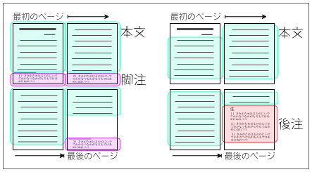

注釈の示し方
本文の内容に関する補足的な説明や議論を記すのが注釈である。
なお、一般常識を注釈に書く必要はない。ここで一般常識というのは、辞書や事典に載っているような基本的な知識のことである。たとえば、山内（2001）は、次のように注意している。
必要もないのに註を付けると、バカがばれる。哲学者カントの研究論文で、カントの生没年などは普通記さない。（山内 2001：175）
注釈では、本文の中に注記号を書き、その部分に対する補足を別の場所に書いて示す。
注記号の書き方
注記号は本文中に「(注１)」や「(1)」のように書く。注記号の文字は本文と同じでも構わないが、上付き文字（右肩に小さめのサイズで書く）にすることが多い。
注を付ける(注１)。注を付ける注１。注を付ける(注１)。注を付ける(1)。注を付ける(1)。注を付ける1。注を付ける*1。
なお、注記号は、文章の始まりに近い方から１、２、３……と順番に番号をつけるようにする。
注記号の位置
注記号の位置によって、注釈の対象とする範囲が変わる。
- 注釈は必要に応じて付けるものである注１。→文全体にかかる
- 注釈は必要注１に応じて付けるものである。→『必要』にかかる
- 注釈は必要に応じて注１付けるものである。→『必要に応じて』にかかる
- 注釈は「必要に応じて付ける注１」ものである。→引用部分（「」の中全体）にかかる
文の末尾に注記号をつければ文全体についての補足を示すことになる。また、文の途中に注記号をつければ、その直前の語または語句についての補足を示すことになる。なお、カギカッコによる引用の末尾に注記号をつけたときには、引用部分全体に関する説明であることを示す（たとえば、出典についてなど）。【参考：→引用の方法】
脚注と後注
注釈には、補足を書く場所の違いによって、脚注と後注とがある。なお、脚注も後注も、注記号の書き方は同じである。
特に指定がない場合は、脚注と後注のどちらの形式にしてもよい。

脚注
脚注は、それぞれのページの注釈を、そのページの下部に掲げる形式をいう。
ページの下部に罫線を引き、その下に小さめの文字で補足を書くことが多い。コンピュータのワープロソフトには、自動で脚注を処理する機能がついているので、その機能を利用すればよいだろう。
その点では、語学的単位（表現上の特徴）を指標として用いない方法があるならば、恐らくそれは優れた方法であろう*6。そこで注目されるのが、Zip圧縮を用いる方法である。
……以下の方法で、その相対的関係を知ることができる。(←ページ終わり) (↓罫線を引く)
*６ 言語要素の分析などの事前処理を必要としないため、適用が容易であり、テクストジャンルや「談話体」などの話体の影響も受けないだろう。
後注
後注は、文末注ともいい、本文の末尾に続けて一括して掲げる形式をいう。
本文の文末に続けて、「注」と見出しをつけ、注記号の１から順に補足を書いていく。補足には注記号にあわせて「１）」、「２）」のような番号をつけ、文末と同じ大きさの文字で書く。
その点では、語学的単位（表現上の特徴）を指標として用いない方法があるならば、恐らくそれは優れた方法であろう注６。そこで注目されるのが、Zip圧縮を用いる方法である。……
……ものと思われるが、この点は、今後の学際的研究にゆだねられよう。(本文終わり)
(１行あける)
注
１）〜〜〜〜
２）〜〜〜〜
……
６）言語要素の分析などの事前処理を必要としないため、適用が容易であり、テクストジャンルや「談話体」などの話体の影響も受けないだろう。